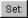

5. Rendering

Rendering is the process which converts the scene of 3D objects and
lights into a 2D image or collection
of 2D images. The 2D image that is obtained from rendering is
calculated based on the positions and parameters of all relevant
objects in the scene. The program that performs these calculations is
called a rendering engine and in Art of Illusion there are 2 available
rendering engines: The Raster Engine and the Raytracer Engine. These
are described in detail in Sections 6.3 and 6.4.
5.1 Cameras
Cameras are what give us the viewpoint from which the rendered image is
taken. A scene can have as many
cameras as you like and the camera whose viewport is required can be
set through the render dialogues.
5.1.1 Camera Options
Before we look at the details of rendering, we should be aware of the
options available for
each camera in the scene. Double-clicking on a camera in the object
list or selecting Object ->
Edit Object displays a dialogue box similar to that below:
|
There
are 3 parameters that can be set for each camera:
Field of View This is the vertical angle that
the camera can 'see'. The field of view can range from 0
to 180 degrees. The horizontal field of view is determined by the
aspect ratio of the image.
Some interesting effects can be created by varying this parameter. The
examples below
were created by varying the field of view and zooming in on the object:
|
Depth of Field This is the distance either side of
the focal distance that remains in focus. Anything
outside this range is out of focus. This has no effect unless a Depth of Field
filter is added to the camera, or the Depth
of Field option is turned on in the rendering engine
(currently, only the raytracer supports this).
Focal Distance This is the distance that is
perfectly in focus. As with Depth of Field
this only has an effect if a Depth of Field filter is used, or
the Depth of Field
option is turned on in the rendering engine.
Perspective This option selects whether the image is rendered with a
perspective or parallel projection.
Camera filters are dealt with in the next section.
5.1.2 Camera Filters
Camera filters are a way of applying post processing to rendered
images, i.e. they are 2D effects applied
to the image produced by the renderers. Camera filters are accessed
through the camera options
dialogue. Clicking on the
button opens the camera filter dialogue as shown below:
 |
On the left is a list showing the camera filters
that are available.
Currently there are 9 filters
to choose from. To apply a filter, select it in the list and click on Add>>.
This adds a filter
of the selected type to the right hand list. Filters in the list are
applied to the image in a top
down order. You can have as many filters as you like in the list and
their order can be altered using
the Move Up and Move Down
buttons. Filters can also be deleted via the Delete
button.
Selecting filters in the right hand list displays their adjustable
parameters in the panel beneath. For
example, the Glow filter's parameters are Radius,
Intensity and Shape.
On the right of the dialogue is a preview of the rendered image. The
rendering parameters for this preview
can be selected by clicking on Configure Preview
which brings up the a dialogue with most of the
usual rendering options. |
Most of the filters are fairly self-explanatory and a preview is
available in the dialogue so that
effects can be fine-tuned.
The example below shows a sepia tone effect achieved using Saturation,
Tint and Brightness filters.

Another example below shows the use of the Outline filter (and the Blur
filter). The Outline filter draws lines around objects in the scene
depending on their depth. There are 4 parameters for this filter; Thickness
is the thickness of the lines drawn, Change Cutoff
and Distance
Cutoff are the parameters that control how and when lines are
drawn. The Color is the
colour of the lines drawn.

The Exposure Correction filter is a useful one for Global Illumination
scenes as it applies a gamma correction to the rendered image which can
enhance darker areas as shown in the example below:

The Noise Reduction
Filter is used to blur noisy parts of an image. The filter applies 'intelligent'
smoothing to those parts of the image
that need it, while preserving the wanted image features. Noise Reduction controls
how much blurring is applied; the greater the number, the more
smoothing. An example is shown below.
All these images were rendered with Min Rays 4, Max Rays 32 and
different levels of filtering are
applied. As seen, this filter can effectively smooth out fine noise
while retaining the key elements of the scene. Too much filtering,
however, does start to affect the desired features.

The Depth of Field filter blurs parts of the image based on how far from the
camera they are. This is one way to create a depth of field effect, where the
camera is "focused" at a particular distance, while objects that are nearer or
further away are blurred and out of focus. (You can also create this effect by
enabling the raytracer's Depth of Field option. The
raytracer creates a more physically accurate depth of field effect, but is much
slower than the filter.)
The parameters for each filter can also be animated. See the
Animation chapter for more details.
5.2 Environment Settings
Various environment options can be set up by selecting Scene
-> Environment . This displays the
following dialogue:
|
Ambient
Color defines the colour and intensity
of light falling on every surface, not coming from any particular
source but from every direction equally.
Environment This sets the background which can
either be a colour or a texture. To select a colour, select Solid
Color from the drop down menu and click on the colour bar
beneath this menu to select
a colour. To set a texture, select Texture Diffuse
or Texture Emissive from the menu. Click on 
to choose a texture to use. The specified texture is mapped to a sphere
of radius 1, and the colour of each point on the sphere (either the
diffuse or emissive color of the texture) determines the light coming
from that direction. This is seen as a background to rendered images
and is also specularly reflected by shiny objects in the scene and (if global illumination is enable)
diffusively reflected by other objects.
|
Environment Fog produces a
uniform fog effect.
The Fog Color defines the colour of the fog
using the usual colour chooser. The amount of light getting through to
the camera from a point at a distance r from the
camera is given by e -r/d
where d is the Fog Distance.
Objects much closer to the camera than d will be
relatively unobscured by the fog. The best effects are obtained with
the fog colour similar to the Environment colour.
|
 |
5.3 Raster Engine
The only advantage of the Raster Engine over the Raytracer is speed but
you need to be aware that
this rendering engine does not have the ability to replicate shadows
and reflections.
A raster renderer works by drawing triangles to the screen. Each object
is broken up into triangular facets, a transform is performed to
calculate the position of each triangle on the image and the
triangle is filled in. The colour of a point on the triangle is
determined by the texture at that point and
the light striking the surface there. There are two standard algorithms
supported by Art of Illusion for
calculating the latter: Gouraud Shading and Phong Shading.
Gouraud shading works by calculating the light striking each corner of
the triangle and interpolating
it to find an estimate of the light at each pixel. Phong shading
interpolates to estimate the surface normal at each point and uses that
to find the total light striking the surface at that point. Gouraud
shading is faster but less accurate and is particularly poor for shiny
surfaces.
The Raster Engine is unable to render shadows or reflections so you
will need to revert to the Raytracer
in that situation.
To render a scene with the Raster Engine, select Scene
-> Render Scene and select Raster
from the top right of the dialogue that appears:
5.3.1 Raster Rendering
Options
|
The Width
and Height define the
size (in pixels) of the 2D image created.
The Camera selected defines which view will be
rendered. The view can be previewed by selecting
the relevant camera in one of the view windows and ensuring that the
zoom is set to 100.
You can select whether to render a Single Image
or a Movie. The Movie option
actually produces a series of consecutively-numbered images which can
be converted to a video format
by many available graphics packages. See animation
for more details on rendering movies.
The next set of boxes, i.e. Start Time, End
Time, Frames/Sec and Images/Frame
are all related to animation. Refer to that
section for details. |
Surface Accuracy defines how accurately geometry
within the scene is rendered. The lower the value,
the more accurate. The value is actually the distance that the
triangles that make up the
surface have to be within the true surface. Bear in mind, though, that
the extra accuracy means additional render times. Here are some
examples showing the effect of varying the surface accuracy:
It should never be necessary to set the surface accuracy below 0.005.
Shading Method is either Gouraud, Phong or Hybrid.
Gouraug and Phong shading have been explained above.
The Hybrid options uses a combination of both; Gouraud for the diffuse
reflections, and Phong for the specular reflections. This gives results
which are intermediate between the two methods for both speed and
quality. A simple example is given below:

Supersampling is a method that produces smoother
looking images by performing additional sampling either over the whole
geometry ('Everything') or for the 'edges' which are prone to
jaggedness. The area that is supersampled can be either 2x2 or 3x3
pixels.

Transparent Background This produces an image with a
background that is transparent, i.e. it adds
an alpha channel to the image (if saved in TIFF format). A 2D paint
program should then allow a
selection to be made using the alpha channel.
The Advanced tab contains the following additional settings:
 |
Texture
Smoothing applies antialiasing to all
textures in the scene to remove details smaller than a pixel to
overcome problems that can arise with under- or over-smoothing in the
renderer or texture.
A value of 1 is the default amount of smoothing. Values greater than 1
do more smoothing and values less
than 1 do less.
Reduce Accuracy for Distant Objects If this is
checked then objects further away in the scene have
a lower surface accuracy than those that are near. This provides
optimum performance with very little
noticeable difference in quality of output.
|
Eliminate backfaces The triangles drawn by the
raster engine have a front and a back. Normally
the backfaces are not seen and the render can optimise performance by
not drawing them. On some occasions, however, e.g. inside closed
objects, the backfaces will be seen and this option will need be
to be unchecked.
Generate High Dynamic Image
If this is turned off, then the pixel colours in the rendered image(s) are a
combination of red, blue and green channels, each with a range of 0 -
255. This limits
the range of intensities present in an image. Switching this option on,
produces floating point pixel data
in the rendered image instead, which effectively allows an infinite
range of colours/intensities. This is
only worth doing if the image format used to save the rendered image(s)
supports floating point, i.e. .hdr.
5.4 Raytracing Engine
A raytracter "shoots rays" from the viewpoint into the scene. It
decides what colour to make a pixel by tracing a straight line from the
camera location through the point on the image plane that corresponds
to that pixel, and seeing whether it hits any object. If it does, it
then considers the point that got hit. It traces rays to each light
source to see if there is anything in the way. If the object is
transparent, it uses the object's index of refraction to determine a
"transmitted ray
direction", and traces a ray in that direction. If the object is shiny,
it determines a "reflected ray direction" and traces yet another ray in
that direction. And if that ray in turn hits an object, it will trace
yet more rays.
To render a scene with the Raytracer Engine, select Scene
-> Render Scene and select Raytracer
from the top right of the dialogue that appears:
5.4.1 Raytracer Basic
Rendering Options
|
The Width
and Height define the
size (in pixels) of the 2D image created.
The Camera selected defines which view will be
rendered. The view can be previewed by selecting
the relevant camera in one of the view windows and ensuring that the
zoom is set to 100.
You can select whether to render a Single Image
or a Movie. The Movie option
produces either a series of consecutively-numbered images (which can be
converted to a video format
by many available graphics packages) or a Quicktime movie . See animation for more details
on rendering movies.
The next set of boxes, i.e. Start Time, End
Time, Frames/Sec and Images/Frame
are all related to animation. Refer to that
section for details. |
Surface Accuracy defines how accurately geometry
within the scene is rendered. The lower the value,
the more accurate. Bear in mind, though, that the extra accuracy means
additional render times. Here are
some examples showing the effect of varying the surface accuracy:

Antialiasing
Aliasing is the effect which causes sloping and curved edges to look
'jagged' and thin lines to become 'broken'. This is basically due to
undersampling of rays at each pixel. Antialiasing is a technique to
smooth out these artefacts and relies on performing extra sampling
generally and at areas of the image which are particularly prone to
aliasing. Art of Illusion allows 2 levels of
antialiasing: Medium and Maximum. Maximum antialiasing usually produces
better looking results than Medium, so it is preferred in most cases. In
rare cases, it may cause very fine details to look too blurry, and in that
case you can switch to Medium. You also can alter the number of rays used
for antialiasing. Art of Illlusion
uses an adaptive sampling technique, increasing the number of rays in
areas which require it. The minimum
and maximum number of rays can be fixed at between 4 and 1024.
Increasing the Min Rays/Pixel and the Max Rays/Pixel
lower down in the dialogue will improve the result. The amount of
antialiasing, and thus the required
number of rays, will depend very much on the image. Bear in mind,
though, that the more rays/pixel, the
longer the rendering time. The example below shows an example of the 2
levels of antialiasing each with
different Min/Max ray settings.

In most situations, Min-4, Max-16 should give good enough antialiasing.
The additional rays are needed
for effects such as soft shadows, depth of field or
glossiness/translucency as used. The minimum can generally be set much
less than the maximum.
Depth of Field Switching on this option brings into
play the focal distance and depth of field
of the camera to make for truly photorealistic effects. Only geometry
within the range focal distance
+/- depth of field will be in focus. The further away from this area an
object is, the more it is
blurred. The focal length and depth of view for each camera is
controlled by the camera options.
The example below shows some examples of the same scene with different
camera parameters:
Gloss/Translucency Gloss is the term for blurred
reflections caused by Roughness in the texture of
the object. Translucency is the variation that occurs in transmitted
light through a transparent
object due to Cloudiness in the texture of the
object. See Uniform
Textures for more details.
The image below shows an example of Gloss on a
slightly bumpy metallic surface. Note that more rays are required
for higher Roughness to get a smooth result:

Soft Shadows Switching this option on allows more
realistic shadows with soft edges to be created.
Such shadows are due to the finite size of the light source which is
ordinarily assumed to be a point
source. Altering the size of the light (radius for a point light or spot light,
angular radius for a directional light) makes the shadows softer as
shown below. Note that more rays are required as the radius of the light source
increases to get a smooth result:

With either gloss/translucency or soft shadows, there are two ways you can
increase the number of rays used to sample the effect. First, you can increase
the number of 'primary rays' sent through each pixel by increasing the Max
Rays/Pixel setting. Second, you can tell the raytracer to use multiple rays
for sampling just the effect you are interested in by adjusting the Rays to
Sample setting. The latter approach can be faster, since it only generates
extra rays for that one effect. On the other hand, it is not adaptive (the way
primary rays are), so those extra rays are always generated even when they are
not needed (such as when rendering soft shadows in a part of the image far from
any objects that cast shadows). That means it can also be slower. You need to
experiment with these settings to see which combination gives the fastest
rendering for a particular scene.
Transparent Background This produces an image with a background that is transparent, i.e. it adds
an alpha channel to the image (if saved in .tif or .png format). A 2D paint program should then allow a
selection to be made using the alpha channel.
5.4.2 Illumination - Global
Illumination, Caustics and Subsurface Scattering
The Illumination tab provides additional settings for global illumination, caustics, and
subsurface scattering:
Global Illumination
Global illumination (GI) is a method of simulating
light scattered from surfaces. In practice this means that surfaces in
close proximity will bounce light off each other. In the example below,
there is a spot light pointing at the sphere in the box. Below left is
the scene rendered without GI and with a point light above the objects;
there is no red light scattered from the sphere as would be expected in
reality. In the middle, where GI is turned on, there is a red tinge to
the wall of the box from the scattered light. The amount of scattered
light depends on the Ambient Color
setting and the diffuse colour of the object from which the light is
scattered.

Using GI, it is also possible to use the
environment background
as a light source as shown above right.
| This technique is very effective for simulating the
lighting produced
on an overcast day (as in the example below) or an interior scene with
large overhead light sources. |
Also, using GI, emissive textures really do give
out light. The
light emitted can be increased by using the colour Scale
module to scale the object's emissive colour. See here for details. |
|
|
| Global
illumination can
produce some realistic and impressive effects when used in conjunction
with
image-based lighting. This is achieved by setting an image to the
background texture and using that as the
light source. This is even more effective when high dynamic range or
radiance (.hdr) images are used. |
|
Using GI effectively requires the balance of several factors. In
general: keep diffuse colours darker
than normal, use an Ambient Color of near black, brighten light sources
(if used) and use many rays/pixel
to produce a smoother-looking image.
There are 4 methods in Art of Illusion for calculating GI as shown on
the options list above: Monte Carlo, Ambient Occlusion, Photon Mapping
or Hybrid.
The Monte
Carlo method adds scattered (or
diffusely reflected) rays to the raytracing algorithm. These rays are
emitted in random directions and, by using enough rays/pixel, they
average out to give the total light coming in from things other than
regular light sources. The smoothness of the resulting image is
controlled by the number of rays set in the Raytracer Dialogue or,
more efficiently, by the Rays to Sample Environment
setting in the Illumination dialogue. In either case, the more rays
used, the smoother the resulting image. The difference is that
increasing the number
of Min/Max Rays in the Raytracer Dialogue will increase the number of
rays used throughout the whole
rendering process, whereas using Rays to Sample Environment
will only increase the number of rays
used to evaluate GI, resulting in a faster render for the same amount
of GI noise.
When using background images for image based lighting, the smoothing
applied to the image is also important (see
Extra Smoothing for
Global Illumination).
Ambient
Occlusion is a simplified version of
the Monte Carlo GI
algorithm. Whereas Monte Carlo will continue to follow and perform
calculations for all rays that have been scattered and re-scattered
until they leave the scene, Ambient Occlusion doesn't calculate diffuse
inter-reflections, with the result that colour bleeding does not occur.
However Ambient Occlusion does
allow scenes to be illuminated by the Environment and by emissive
objects as shown in the Monte Carlo vs.
Ambient Occlusion images shown below: Ambient Occlusion is also faster.

Photon
Mapping (Direct) is another way of calculating
GI. In this method, a GI photon map is built up from
the paths of individual photons emitted by each light source (and
objects with emissive textures). The
number of photons traced out in total is set by the Total
Photons in the Illumination dialogue. As
you would expect, the more photons used, the more accurate the photon
map. However increasing this value
uses more memory and takes longer to render.
The photon map is then used to calculate the light at each point in the
scene. More specifically, to reduce noise, the light at each point is
calculated from a weighted (according to distance from the point)
average of a certain number of photons around that point. The number of
photons used in this calculation is set via
the # To Estimate Light value in the Illumination
dialogue. Increasing this value reduces noise
but may cause blurring of the photon map. That's because, in order to
get the required
number of photons, it is necessary to sample over a larger distance
from the point. Artifacts can also be
caused, especially at sharp corners. These adverse effects can be
reduced somewhat by increasing
the Total Photons.
The image below shows the variation in image quality achieved by
varying the 2 photon parameters. As can be seen, increasing the Total
Photons gives a sharper,
more accurate map whereas increasing the # To Estimate Light
reduces noise but increases blurring.
The final method of Global Illumination is the Photon Mapping (Final Gather) method. This
is a combination of Monte Carlo and Photon Mapping. The Monte Carlo
method is used for rays before they
have been diffusely reflected. Photon mapping is used for rays that
have been diffusely reflected. In this
method the photon map is only 'seen' by diffusely scattered rays which
means that the accuracy of the map
is less important than the Photon Mapping method. This can be seen
below; the images are relatively
insensitive to the variation in number of photons:

Caustics
If this is option is enabled in the Illumination dialogue, then
another photon map is calculated which contains only photons which have
been either specularly
reflected or refracted at least once. This enables realistic caustic
effects where light is focussed
producing bright patterns and spots. As with the photon mapping for
Global Illumination, the
Total Photons and # To Estimate Light can
be set. The image below shows some examples.
Increasing the Total Photons (down left column of
images) makes the caustics more accurate. Increasing the # To
Estimate Light (down right column of images) initially
reduces noise but begins
to blur the image if set too high.
Scattering From
Materials
If you have objects that have scattering materials set to them, light
should scatter within the object.
The method used to calculate that scattered light is set here. There
are 3 options for scattering within materials: Single Scattering or
Photon Mapping or Both.
Single Scattering:
A simplistic approach is taken which reduces calculation times at the
cost
of reduced accuracy and less realistic effects. As a ray propagates
through a scattering material, at each point it sends out a ray to each
light source to find out if it's blocked. This works well for materials
that only scatter a little bit, e.g. light through a dusty room as
below. In this
example, a cube was created to fill the room and set to a completely
transparent Texture and the
Material shown below left. This material is set to be semi-transparent
and to have a high
amount of scattering by scaling the Scattering Color
.

Photon Mapping:
This method simulates subsurface scattering, which is essential for
creating realistic materials
like wax, skin, milk, marble etc. The method builds a photon map by
shooting photons at all the objects with scattering materials, letting
them bounce around inside, and seeing where they end up.
This is slower than the Single Scattering method, unless there are a
lot of light sources, in which case it can actually be faster. Also,
it's not as good for cases like the sunbeam in a dusty room, because
the edges of the sunbeam won't be as sharply defined. The photon
settings
will affect the accuracy and smoothness of the result as shown in the
example below. This is an attempt
to simulate wax using the Texture and Material shown. The scene
consists of a simple object lit by
a point light inside a transparent but emissive sphere (the emissive
quality of the sphere is only being
used as a visual effect rather than a light emitting texture - the only
light in the scene is the
point light inside the sphere). With Single Scattering, the unrealistic
result shown below centre right
is obtained. Using Photon Mapping with various photon settings, the
results are far better.

Both uses a combination of standard raytracing for
single scattering and photon mapping for
multiple scattering. In theory, this should give the best results but
will be the slowest method.
5.4.3 Advanced Settings
The Advanced tab contains the following options:
 |
To
understand some of the options available here, we need to consider
the raytracing process. The engine
sends a ray from the camera through each pixel in the image and looks
for interactions with objects along
the way. If it hits a shiny or transparent object, it sends out more
rays which, in turn, may lead to further
rays etc. This produces a 'tree' of rays resulting from the single
initial ray which could go on for ever.
In order to stop the process at a sensible point, there are 2
parameters: Max Ray Tree Depth which
is the number of levels produced from the initial ray, and Min
Ray Intensity which stops the process
once the intensity of the rays becomes small enough as to have a
negligible contribution to the final colour
of the pixel. These parameters, then, are ways of balancing the
rendering time and rendering quality.
You will need to increase the Max Ray Tree Depth if
there are a large number of reflections
or transparent objects. In the example below, a red cylinder is placed
between 2 parallel mirrors which
should produce an infinite number of reflections. In this situation,
the Max Ray Tree Depth needs
to be increased as shown. |

Material Step Size This is a control on integration
step size on all materials in a scene. The step size for each material
is determined by the program but can be overridden here. Small values
lead to long rendering times but may be necessary for very fine
materials. Large values result in faster
renders but may also create blurring of materials.
Texture Smoothing applies antialiasing to all
textures in the scene to remove details smaller than a pixel to
overcome problems that can arise with under- or over-smoothing in the
renderer or texture.
A value of 1 is the default amount of smoothing. Values greater than 1
do more smoothing and values less
than 1 do less.
Extra Smoothing for Global
Illumination provides additional smoothing for the
inherently noisier
global illumination process. The need for smoothing will depend on the
intensity range in any images used in textures/environment maps. The
smoothing is only applied after rays have been diffusively reflected at
least once. Environment maps can have a higher degree of smoothing as
rays emanate from the environment sphere, which is physically distant
from objects in the scene. This distance means that each point on a
surface will 'see' large areas of the environment map and, thus,
additional smoothing will have little effect. HDRI images will in
general need more smoothing (up to 1000 or more) to reduce noise in the
final render because of the additional intensity range. The
examples below show the effect of this smoothing for an HDRI
environment map - note that as well as smoothing the rendered image
generally, the colours differ markedly as the environment map blurs.
Reduce Accuracy for Distant Objects If this is
checked then objects further away in the scene have
a lower surface accuracy than those that are near. This provides
optimum performance with very little
noticeable difference in quality of output.
Use Less Memory This option changes how the raytracer represents your
scene internally to make it use less memory. This is useful when rendering
very complex scenes that otherwise would cause you to run out of memory. It
does make rendering take slightly longer in most cases, so you should only use it
for very complicated scenes.
Russian Roulette Sampling
is a different way of tracing transmitted or reflected rays. Instead of
scaling the intensity of all such rays, it scales the probability of a
ray being created at all. For example, consider a texture that has a
specularity of 0.2: the default ray tracing process would scale the
intensity of all specularly reflected rays by 0.2. Russian Roulette
sampling, on the other hand, will produce specularly reflected rays of
intensity 1.0 but only 20% of the time. This has the advantage of not
spending time rendering rays that only contribute a small amount to the
final colour of a pixel. In practice, Russian Roulette sampling is
generally faster but produces
noisier images. Its main advantage is in producing faster render
previews particularly when using Global Illumination. For final
renders, it is probably best to switch this off.
The images below show the difference between the quality and render
time of the standard raytracer compared with the Russian Roulette
sampling for a Global Illumination render:


| Standard raytracer - render time 12m 46s |
Russian
Roulette Sampling - render time 10m 01s |
5.5 Saving Rendered Images
When the image has rendered, 'Done Rendering' will be displayed at the
top of the image window and you will be given the option to Save
the images. Clicking on  will produce the following dialogue:
will produce the following dialogue:
 |
Here you can select the image format to be saved, either JPEG (.jpg),
TIFF (.tif), PNG (.png), Windows bitmap (.bmp), or Radiance or High
Dynamic Range Image (.hdr) files. If you have transparent
background, then you will need to save as a .tif or .png file to
retain this information to use, for example, in a 2D graphics package.
The Quality defines the amount of compression of
the image when saved in JPEG format. A higher Quality
value means a better looking image at the cost of file size.
Clicking OK displays a further dialogue for the filename. |
A Filter button also appears in the window when the image finishes rendering.
Click it to modify the set of filters applied to the camera.
This is very useful when you render an image, only to find that the filters didn't
produce exactly the effect you wanted. You can modify them, see the effect
immediately, and save the image once you are happy with it, all without needing
to re-render the image.
Back to Contents